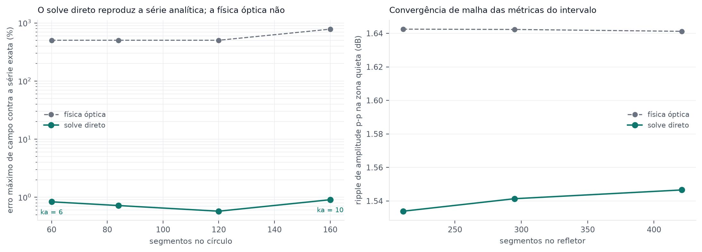

Casos de sucesso · Caso · antenas e RF
Antes de propor um substituto, medimos o solver
Seiscentas e trinta configurações de um refletor de câmara compacta resolvidas duas vezes, nas mesmas condições e métricas — para saber o que cada fidelidade custa e onde ela erra.
Validado
Objetivo
Otimizar o refletor de uma câmara compacta — a peça que define o tamanho da zona quieta onde a antena é medida — pede centenas de configurações. A física óptica é barata e aproximada; o solve exato é caro. Sem medir os dois lado a lado, qualquer proposta de substituto ou de multi-fidelidade é suposição: não se sabe quanto custa cada lado nem onde o barato erra.
Principais resultados
- Em 3-D o solve direto custa cerca de 768× a física óptica — 20 segundos contra aproximadamente 4,3 horas por projeto. O substituto não é preferência, é necessidade.
- Ordenar pelo modelo barato já leva a 94% do melhor projeto com 12 solves caros; combinar as duas fidelidades chega a 97–98% com o mesmo orçamento, contra 81% de uma busca cega.
- A física óptica só é útil onde se sabe quanto ela erra. Contra a série exata do cilindro, ela erra 500–780%; o solve direto erra 0,6–0,9%.
Duas fidelidades, as mesmas métricas
As 630 configurações — tamanho do refletor, iluminação e 18 perfis de borda — foram resolvidas pelos dois métodos, com as mesmas métricas de saída. A diferença entre eles virou um modelo aprendido, e não um fator de correção escolhido a dedo.
O passo anterior é a verificação de cada solver: o solve direto reproduz a série analítica de um cilindro condutor com 0,6–0,9% de erro. Sem essa âncora, não haveria como saber qual dos dois está certo.
O que a correção aprendida remove — e o que ela não transfere
A correção reduz o erro da física óptica por indicador dentro da família de bordas ensaiada. Com um perfil de borda inteiro mantido fora do treino, sobram 17–20% nas grandezas de amplitude e nada em ripple, fase e largura útil: a transferência tem limite, e o limite é medível.

Quanto custa cada lado
O custo do solve direto em 3-D não foi medido diretamente: vem do custo medido de uma única aplicação do operador integral denso, 391 segundos na malha de produção, repetida 40 vezes por solve. A regra que fecha a conta com o solve do cliente é direta: para um solve direto de T segundos, divida T por 391 para saber quantas aplicações do operador cabem no mesmo tempo.
“Nenhuma proposta de substituto deveria existir antes de medir os dois lados na mesma bancada. O valor não estava em prever melhor, estava em saber quanto cada método erra e quanto custa.”
Traga o seu caso
Tem uma simulação lenta, cara ou difícil de verificar?
Mande o caso. Respondemos com um escopo fechado e uma métrica de sucesso mensurável, ou dizemos que o método clássico resolve melhor.